Natuur
Hieronder beschrijven we van enkele bomen hoe je ze kan herkennen, waar ze voorkomen en hoe brandbaar het hout is.
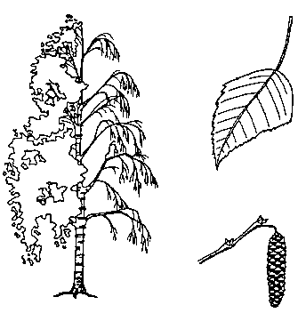 |
Berk De berk kan groeien waar bomen normaal niet genoeg voedsel kunnen vinden: op rotsen en in zand bijvoorbeeld. Deze boomsoort komt ook voor onder de vorm van kreupelhout. De ranke twijgen zijn geschikt om bijvoorbeeld bezems te maken. Het blad is klein, bijna driehoekig getand. Zeer beweeglijk gebladerte. De zilverberk herkent men gemakkelijk aan zijn zilverwitte en glanzende schors, doorspekt met donkere vlekken, die in fijne papierlaagjes afpelt. Het hout is zacht, brandt goed, geeft veel warmte doch levert bijna geen as op. |
| Eik Meestal forse, hoogstammige bomen met knoestige takken. Ook wel eens aangeplant als hakhout. Gegroefde, grijsgroene, ruwe schors. Duurzaam en kostbaar hout; ook uitstekend als brandhout: brandt traag, geeft veel warmte, weinig rook, doch knettert. Levert goede as op. Naargelang de vorm van het blad en de eikels onderscheiden we:
|
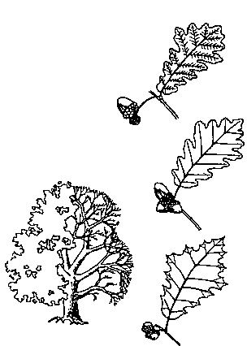 |
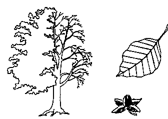 |
Beuk Rechte, gladde, grijsgroene stam. Dichte vertakkingen. Beukenootjes als vruchten (november). Bladeren zijn lichtgetand, behaard, groen en teer. Bij de sierbeuk zijn ze bruin-purper. Het hout is uitstekend voor meubels en brandhout. Het is slechts lichtjes minderwaardig aan dat van de eik. |
| Olm of Iep Lange, rechte, cilindervormige stam; donkerbruine schors. Blad is eivormig en gezaagd, ongelijk aan de voet. Vrucht: rijen gevleugelde nootjes (mei). Hout is hard en slecht brandbaar. |
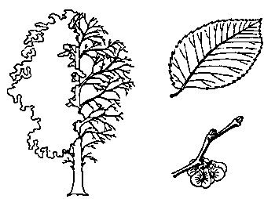 |
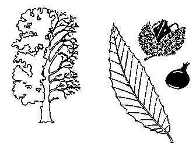 |
Tamme kastanje Bladeren zijn sterk getand, lang (ongeveer 15 cm), hard en puntig. Schors is glad en rood-bruin van kleur. Vrucht: de eetbare kastanje. Minderwaardig brandhout, vermits het weinig warmte geeft en praktisch geen as. |
| Paardekastanje of Wilde kastanje Komt alleen voor als sierboom. Samengestelde bladeren met 5 tot 7 delen om 1 middenpunt. Lange steel. De gerimpelde schors valt met schelpen af. Bloeit in de lente met grote, openstaande trossen (wit). Vrucht zit in stekelige bolster en is niet eetbaar. |
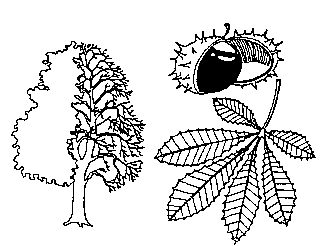 |
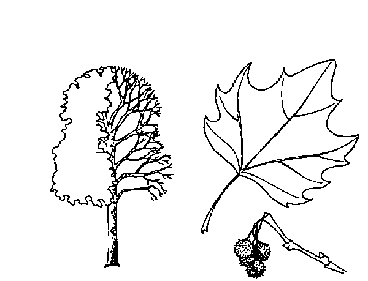 |
Plataan Komt veel voor in lanen en parken. De schors valt in grote platen af en veroorzaakt lichtgroene plekken op de stam. Handvormige, grote bladeren met 3 tot 5 punten. Vrucht: stekelige bollen, hangend aan een lange steel. |
| Esdoorn of Ahorn Gladde schors, die in schubben afvalt; dikke takken. Bladeren zijn handvormig met diepe insnijdingen en 5 punten. Roodachtige nerven. Bloeit met hangende trossen. Dubbel gevleugelde vruchtjes (september). Goed brandhout. |
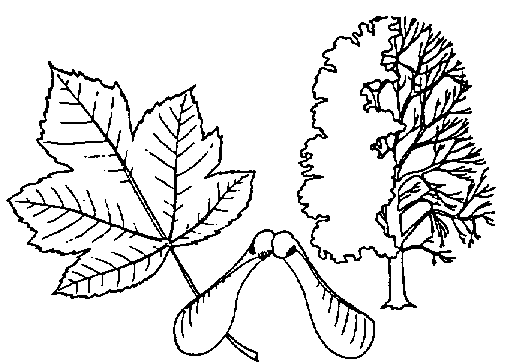 |
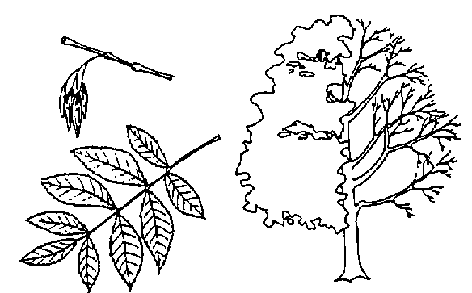 |
Es Heeft samengestelde bladeren: ze bestaan uit een reeks getande blaadjes van ongeveer 7 cm, die aan 1 afgeplatte bladsteel zitten. De schors is glad en groen en barst bij oudere bomen. Vrucht is een gevleugeld bolletje. Het hout is hard en zeer geschikt voor stelen en patrouillestokken. |
| Populier Een ongeveer driehoekig getand blad van 8 tot 10 cm lengte. Grijs-groene ruwe schors. Vrucht: wit-wollen katje (april). Minderwaardig hout. Men onderscheidt:
|
Zwarte populier of Canadapopulier 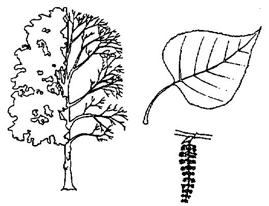 Italiaanse populier 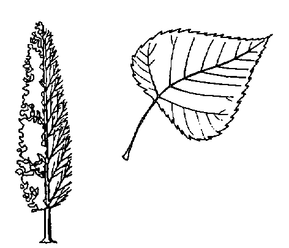 |
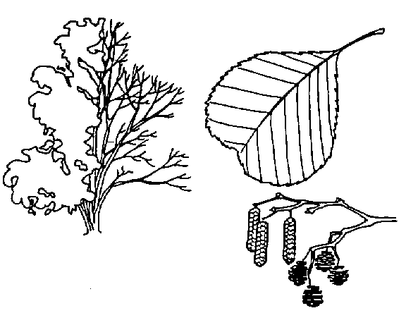 |
Els Komt meestal onder de vorm van hakhout langs grachtkanten en in kreupelbos met vochtige grond voor. Het blad is getand en hartvormig met de punt naar de steel toe, donkergroen, hard en kleverig. Vrucht: katjes en elzepropjes, die zaadjes bevatten. Enkel bruikbaar als brandhout indien volledig droog. |
| Hazelaar Komt voor in struikvorm. Blad is hartvormig, met de punt naar buiten (vergelijkbaar met de els), lichtgroen en zacht. Vrucht: eetbare hazelnoot. Goed brandhout. |
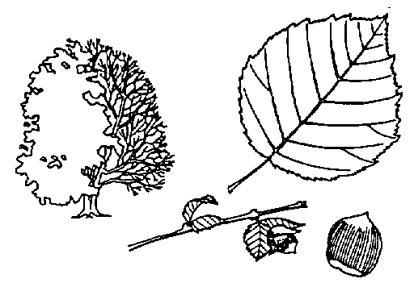 |
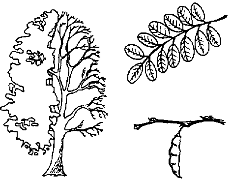 |
Acacia Langs lanen en in gemengd kreupelhout. Samengesteld blad (als dat van de els): een reeks blaadjes van ongeveer 2 cm, ovaal en niet getand, op 1 bladsteel. Bloeit in wit-roze hangende trossen. Takken hebben sterke doornen en taaie twijgen. Het stamhout is hard en goed brandbaar. |
| Linde Schaduwrijke bomen met zachte hartvormige bladeren; aan de voet behaard (de hartvorm benadert een cirkel, gebroken door de puntige top en de ingesneden voet). Aan de voet van de boom groeien zeer dikwijls jonge scheuten. De vruchten worden gebruikt voor de bereiding van thee. Ze bestaan uit een steeltje waarlangs eerst een langwerpig vleugeltje, daarna een bloem en tenslotte een bolletje komt. |
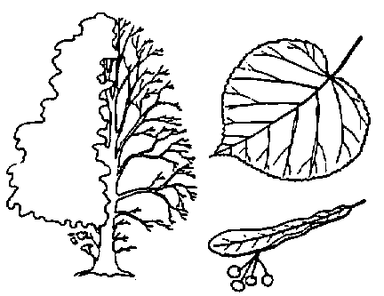 |
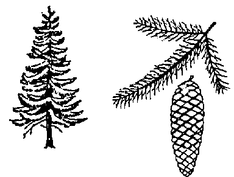 |
Spar Komt vooral voor in de Ardennen. Kegelvorm met neerhangende takken. Zeer hoge en rechte stam; vandaar de bijnaam 'mast'. De naalden zijn ongeveer 2 cm lang en zitten ieder afzonderlijk vast aan een takje. Vrucht is de sparappel een kegel van 10 cm en meer. |
| Den Komt vooral voor in Laag-België. De jonge boompjes zijn piramidevormig; de oudere bomen hebben onregelmatige vormen en gewrongen stammen. De dennen uit het gebergte zijn mooier van vorm: daardoor komt het dat onze den ook wel de 'grove' den wordt genoemd. Naalden zijn ongeveer 6 cm lang en twee aan twee in een kokertje geplaatst. Vrucht is de denneappel: eivormig en ongeveer 5 cm groot. |
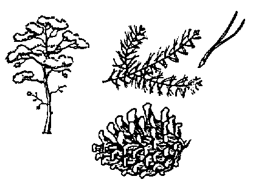 |
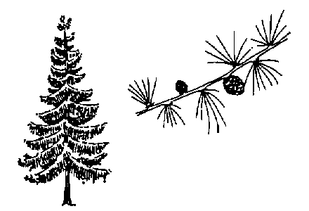 |
Lork of Larix Komt meestal voor in Laag-België. Wijd uitgespreide piramide. Naalden zijn ongeveer 3 cm lang en waaiervormig gebundeld in kokertjes. Vrucht is de lorkappel: eitjes van ongeveer 3 cm. |